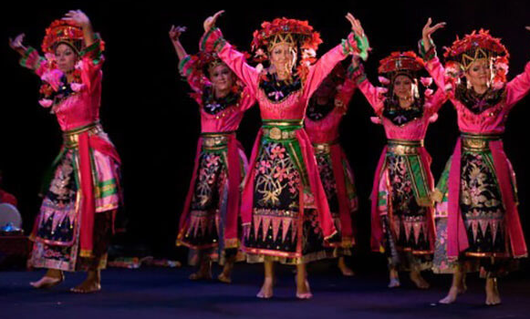
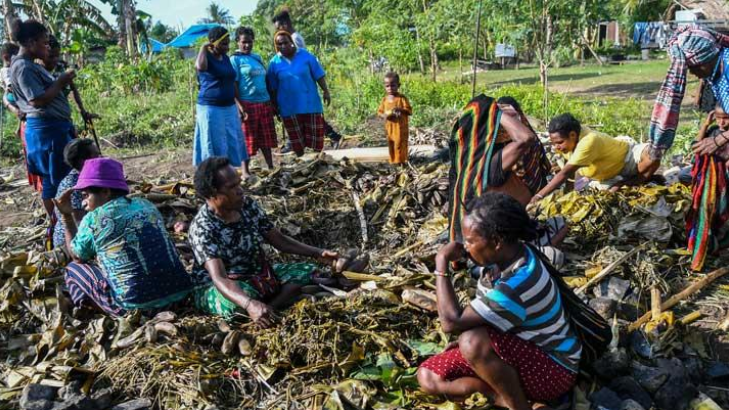
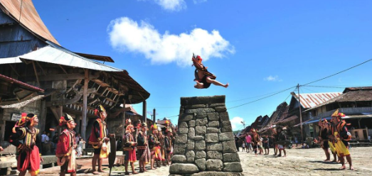
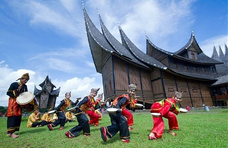

Kebudayaan Indonesia
Indonesia dikenal dengan keanekaragaman budaya yang kaya dan menarik. Berikut adalah beberapa elemen kebudayaan yang istimewa:
Tarian Tradisional
berikut adalah contoh tarian tradisional dari betawi,Tari Betawi yang pertama adalah Tari Kembang Lambang Sari.
Upacara Adat
berikut adalah contoh adat yang ada di papua yaitu pesta bakar batu Bersyukur dan bersilaturahmi yang dilakukan oleh masyarakat Papua merupakan bagian dari tradisi Pesta Bakar Batu di Papua..
Tradisi Unik
Berikut adalah contoh tradisi unik di nias, sumatra utara Lompat batu adalah salah satu tradisi lokal yang terkenal dan unik dari Pulau Nias, Sumatra Utara. Konon, tradisi ini telah dilaksanakan secara turun-temurun.
Kesenian Tradisional
Tari Piring juga merupakan kesenian tradisional yang berupa tarian dan berasal dari Minangkabau, Sumatra Barat.
